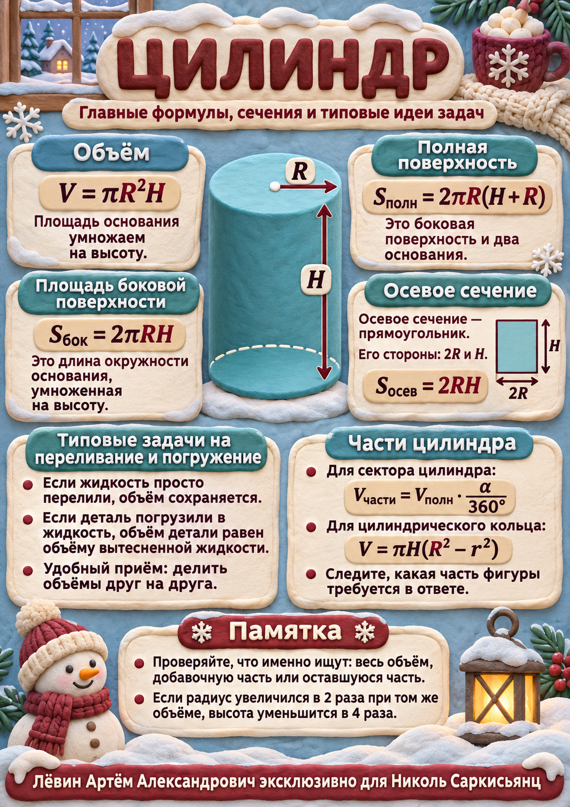

Объём и поверхности
Основание — круг. Боковая поверхность после развёртки становится прямоугольником.
Объём
Площадь основания умножаем на высоту. Радиус r равен половине диаметра d.
Площадь боковой поверхности
Произведение длины окружности 2πr на высоту h.
Площадь основания
Основания равны друг другу и параллельны.
Полная поверхность
Боковая поверхность плюс два основания.
На что обратить внимание. Высота — расстояние между плоскостями оснований; у прямого цилиндра она равна образующей. В полной поверхности считаем два круга.
Посмотреть, как меняются объём и поверхность при изменении r и hЛаборатория →Осевое сечение
Сечение плоскостью через ось прямого кругового цилиндра — прямоугольник. Его стороны равны диаметру и высоте.
Две связанные площади
Если дана диагональ ℓ, применяйте теорему Пифагора: ℓ² = 4r² + h².
Пример 1 · Площадь сечения равна 4 см²
Найдите площадь боковой поверхности, делённую на π. Из связи площадей получаем: Sбок/π = Sосев = 4. Радиус и высоту по отдельности находить не требуется.
Метод отношения объёмов
Выпишите формулу объёма для каждого состояния. Деление сокращает общие множители и показывает, как именно изменился результат.
Пример 2 · Объём 12 м³
У второго цилиндра радиус вдвое меньше, а высота втрое больше.
V₂ = 12 · (1/2)² · 3 = 9 м³.
Обратная формула
Если объём известен, высоту удобно выразить заранее:
При постоянном V высота обратно пропорциональна квадрату радиуса.
Пример 3 · Переливание воды, исходная высота 16 см
Всю воду перелили без потерь в цилиндрический сосуд, диаметр которого вдвое больше. Новую высоту можно получить последовательно:
Аналогично, если новый диаметр в семь раз больше, а начальная высота равна 147 см, новая высота равна 147/49 = 3 см.
Измените радиус при постоянном объёме и проследите за высотойЭксперимент →Переливание и погружение
При переливании сохраняется объём жидкости; при полном погружении детали прирост занимаемого объёма равен объёму погружённой детали.
Пример 5 · Уровень поднялся на 9 см
В цилиндрическом сосуде находится 2000 см³ воды. Начальная высота воды — 12 см. Деталь полностью погрузили, и вода поднялась ещё на 9 см. Вода через край не выливается.
- Исходный объём воды: V = πr² · 12 = 2000.
- Объём детали равен объёму дополнительного слоя: Vдет = πr² · 9.
- Разделите объёмы: Vдет/2000 = 9/12.
- Получаем Vдет = 1500 см³.
Секторная часть цилиндра
Если часть тела вырезают двумя плоскостями через ось, её объём составляет ту же долю полного объёма, что центральный угол — от полного оборота.
Пример 6 · Угол 90°
Радиус 6 см, высота 5 см. Четверть цилиндра имеет объём π · 6² · 5 · 90/360 = 45π см³.
Пример 7 · Вырезано 60°
У оставшейся части угол равен 360° − 60° = 300°. При r = 15 см, h = 5 см объём составляет 937,5π см³.
Составные тела и сквозные отверстия
Для соединённых частей объёмы складываются. Из большого тела при удалении отверстия вычитается объём удалённой части.
Пример · Цилиндр и половина цилиндра
Полный цилиндр: r = 2, h = 3. Верхняя половина другого цилиндра: r = 2, h = 1.
Складываются объёмы без взаимного перекрытия.
Пример 8 · Сквозное отверстие
Внешний радиус R = 5 см, внутренний r = 2 см, высота h = 5 см.
V = π · 5 · (25 − 4) = 105π см³.
10 задач · Путь А
Задачи по нарастанию сложности. Решайте самостоятельно; поле ответа принимает число, при необходимости — десятичную запятую. Ответы доступны ниже.
- Радиус цилиндра 3 см, высота 4 см. Найдите V/π (в см³).
- Диаметр основания 6 см, высота 7 см. Найдите Sбок/π (в см²).
- Радиус 5 см, высота 3 см. Найдите Sполн/π (в см²).
- Площадь осевого сечения равна 24 см². Найдите Sбок/π.
- Первый цилиндр имеет объём 18 см³. Радиус второго вдвое больше, высота втрое больше. Найдите его объём (в см³).
- В сосуде уровень воды достигает 98 см. Вся вода перелита без потерь в другой сосуд, диаметр которого в 7 раз больше. Найдите новую высоту (в см).
- В сосуде 840 см³ воды, высота уровня 7 см. После полного погружения детали уровень поднялся на 4 см. Найдите объём детали (в см³); вода не выливается.
- Из цилиндра радиуса 6 см и высоты 5 см удалили секторную часть с углом 120°. Найдите Vост/π (в см³).
- Тело без взаимного перекрытия состоит из полного цилиндра (r = 2 см, h = 4 см) и половины цилиндра (r = 2 см, h = 3 см). Найдите V/π (в см³).
- Из цилиндра радиуса 5 см и высоты 4 см вдоль оси удалили цилиндрический сквозной канал радиуса 2 см. Найдите V/π оставшегося тела (в см³).
Таблица ответов к 10 задачам
Памятка на одну страницу
Основные формулы, типичные ситуации и контроль того, что именно требуется найти.

Постер к занятию · 23.11.26
Перед ответом проверьте
- Использовали радиус или диаметр?
- При изменении радиуса учли его квадрат?
- Для погружения взяли прирост высоты?
- Вычли или сложили нужные части?
- Записали именно тот формат ответа, который просили?